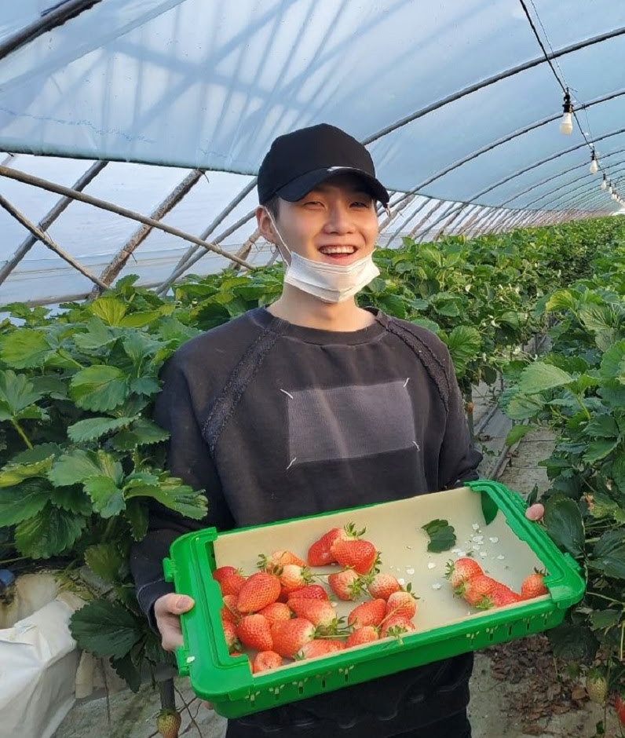

Nosso objetivo
O nosso principal objetivo é auxiliar a agricultura familiar e/ou os
produtores de pequena escala, a combater as principais dificuldades que
diminuem e/ou inviabilizam a produção de morangos, (principalmente no estado de São Paulo).
Através de um serviço que consistirá na instalação de sensores para capturar e monitorar a temperatura
e umidade em tempo real presentes na estufa e gerar um feedback para o cliente.

Como funciona o monitoramento
Utilizando um sensor de temperatura LM35 e um sensor de umidade DHT11,
onde eles irão, através de um gráfico, exibir uma média de
temperatura e uma média de umidade, dando ao usuário do produto
uma noção de como está seu cultivo em relação a esses dois sensores.